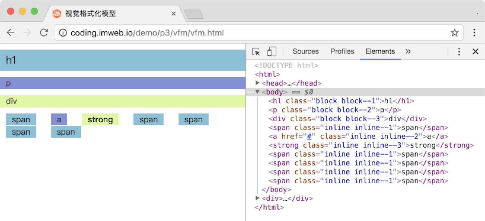

盒模型详解
认识盒模型
HTML文档中的每个元素在渲染的时候都会被描绘成一个矩形盒子，而盒模型(box model)正是用来表示每个元素盒子所占用空间大小的模型。
如下图，每个元素都是以一个矩形的形式来呈现：

在我们现实生活中，描述一个矩形直接用宽和高即可。但是在CSS中主要通过四个部分来描述，分别为：margin（外边距），border（边框），padding（内边距），content（内容区域）。如下图：

盒模型计算方式
一般来说，默认的盒模型实际占用空间计算模式为：
- 水平空间大小 = margin(左右) + border(左右) + padding(左右) + width
- 垂直空间大小 = margin(上下) +border(上下) + padding(上下) + height
因为外边距(margin)为元素之间的距离，所以如果扣除它，则一个元素的实际大小就是 border + padding + width/height 。
这种计算模式在对于非 px 为单位的宽高设置时，会带来非常大的计算困扰。如下：
.box {
width: 50%;
border: 1px solid #ccc;
}
我们想要的肯定是50%，但是实际的大小却是 50% + 2px ，这多出的 2px 就很让人无奈了，于是为了不破坏这 50% 的宽度，往往得再内嵌一层元素用来设置 border ，就成了下面这样：
.box {
width: 50%;
}
.box .box-inner {
border: 1px solid #ccc;
}
这种解决方式显然不太科学，至少导致了 HTML 结构的臃肿，而 box-sizing 属性的出现就解决了这个问题，它就是用来改变元素宽高的计算方式。
box-sizing 属性有两个常用的取值 content-box 和 border-box 。
如为 content-box （这也是默认值）则实际宽度为上面所说的计算方式：
实际宽高 = border + padding + width/height
如为 border-box 则是另一种计算方式，其实际宽高就是设置的 width/height ，如下图：

其实从字母意思就可以看出来：一个为 content-box ，说明宽高是 content 内容的宽高；另一个是 border-box ，则说明宽高是包括了 border 和 padding 的。
了解盒模型的计算方式是非常重要的，现在的网页，尤其是移动端的页面，需要适应于不同的屏幕大小，所以一般都会提前设置所有元素的盒模型都为 border-box 模式，以方便以后宽高的计算。代码设置如下：
* {
box-sizing: border-box;
}
盒模型相关属性
上面我们已经说了 box-sizing 属性可以控制元素宽高的计算方式，除此之外，盒模型还有下面几个相关属性需要掌握：
- width(包括min-width, max-width)：宽
- height(包括min-height, max-height)：高
- padding：内边距
- border：边框
- margin：外边距
上面五大属性，除了 width 和 height 以外，padding、border 和margin 属性都是由四边组成的，每边都可以设置自己的单独值，还可以简写。这里以 margin 为例具体讲解下简写的取值模式。
在讲解之前，我们先说下盒模型的四边，方向分别为上、下、左、右，而 CSS 中表示就分别是 top、bottom、left、right，如下图表示：

首先，我们可以单独给每个方向设置各自的margin，分别对应我们下面四个属性：
- margin-top：top 方向单个值
- margin-right：right 方向单个值
- margin-bottom：bottom 方向单个值
- margin-left：left 方向单个值
很显然，如果四个方向都有值的话，上面四个每个都要写一次是一件多么费力的事，于是我们又有了一条总的属性 margin
- margin：总的，四个方向的值
简单来个例子，如下：
/* 简写之前 */
.box {
margin-top: 10px;
margin-right: 20px;
margin-bottom: 30px;
margin-left: 40px;
}
/* 简写之后 */
.box {
margin: 10px 20px 30px 40px; /* 注意顺序以top开始，顺时针方向 */
}
这样是不是省力很多了，但是如果四个值都是相等的呢，难道要写成margin: 10px 10px 10px 10px;吗？
这当然不可能的。margin 的取值可以有1-4个值，各种情况分别表示如下：
margin: 10px;，表示四个方向的值都是10px，如下图：
margin: 10px 20px;，表示top和bottom方向是10px，left和right方向是20px，如下图：
margin: 10px 20px 30px;，表示top是10px，left和right是20px，bottom是30px，如下图：
margin: 10px 20px 30px 40px;，以顺时针分别表示top，right，bottom，left值，如下图：
这种取值模式其实并不是 margin 所独有的，同样 padding 也是按照这个模式来的。而且是一模一样的，而 border 相对来说还要更复杂点，border的简写，其简写模式为：border: 1px solid #ccc;。
看起来是不是跟我们的 margin 不一样啊？不要急。我们先解释下这到底是什么个意思。
border 的简写其实是由 border-width，border-style，border-color 三个属性组合而成的。1px 就是 border-width，solid 就是 border-style，#ccc 就是 border-color。
而这三个属性，它们如果单独来写，其取值模式就和margin是一样的了，都可以设置1-4个值，如：
.box {
border-color: #f00 #ccc #ccc; /* top left和right bottom */
border-width: 2px 1px; /* top和bottom left和right*/
border-style: solid; /* all */
}
除此之外，border当然也有表示方向的属性，如border-left: 1px solid #f00;，则表示左边框为1px红色的实线。同样还有border-top，border-right，border-bottom。
而方向又可以和边框属性结合，如border-top-width，border-top-style，border-top-color。
所以，如果我们要设置不一样的边框，一般可以先设置个默认一样的，然后再通过单边的，或者通过border-width，border-style，border-color去特殊设置
来个简单的例子，如下：
.box1{
padding: 15px 20px;
border: 1px solid #f00; /* 先设置所有的边框颜色都为#f00 */
border-color: #f00 #ccc; /* 再设置上下为#f00, 左右为#ccc */
}
注：outline 属性不属于盒模型部分，它不占据空间大小，目前来说使用很少，大概了解即可。